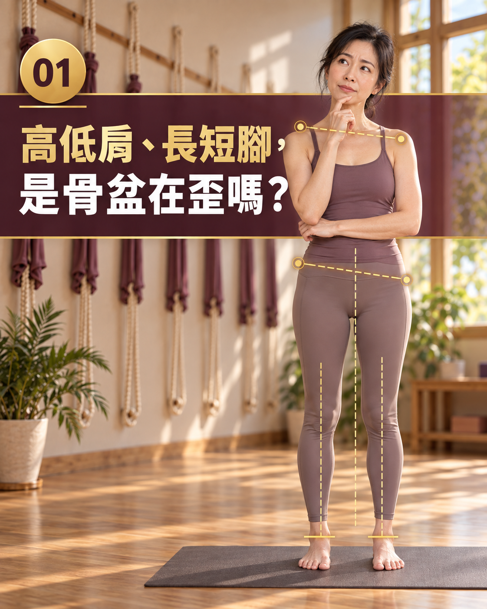
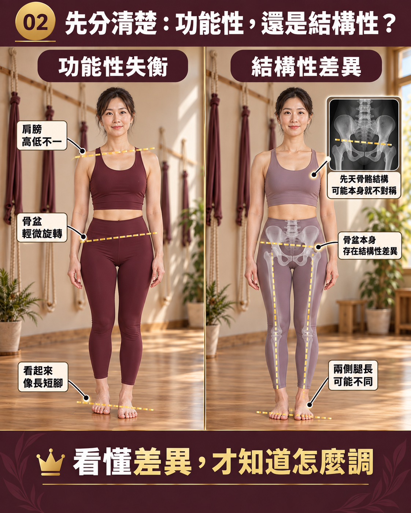
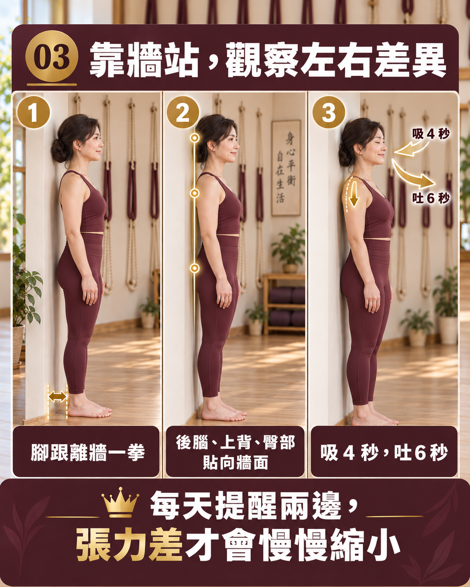

高低肩、長短腳是骨盆在歪嗎？先看懂身體兩側張力與生活習慣的關係

- 照鏡子發現肩膀不等高或褲長看似不同，多數人並非骨骼結構變形，而是長期生活習慣造成的兩側張力差。
- 需先分清「機能性張力失衡」（肌肉張力與姿勢習慣引起，可透過練習改善）與「結構性長短差異」（骨骼真身長短，需影像醫學確認）。
- 翹腳、單側背包包或單手滑手機使骨盆產生側傾或旋轉傾向，脊椎為保持視線水平而產生向上代償，反映在肩膀便形成高低肩。
- 壁繩瑜伽利用懸掛與支點輔助，能引導兩側獨立感知、溫和釋放較緊一側並啟動較弱一側，逐步找回平衡穩定。
站在鏡子前，你是否曾發現一側肩膀似乎比另一側高出一截，或是穿長褲時總覺得某一腳的褲管特別容易拖地？很多人第一時間會感到焦慮，擔心自己的「骨頭是不是長歪了」。其實，人體因為慣用手與日常活動偏好，普遍存在一定程度的兩側微幅不對稱，多數時候這並非骨頭出了問題，而是身體兩側的肌肉張力在長期生活習慣中拉開了差距。
先分清楚：機能性張力差異，還是結構性長短？
面對左右不對稱，先建立客觀認知能幫助我們放下無謂的焦慮：
- 機能性張力差異（Functional Asymmetry）：兩腿骨骼實際長度相同，但因為單側骨盆側傾、旋轉，或是臀部、腰部與下肢肌群張力不均，導致站姿或臥姿時出現視覺上的長短腳與高低肩。這類狀況可透過活動度伸展、肌耐力平衡訓練與日常習慣修正獲得改善。
- 結構性長短差異（Structural Difference）：骨骼本身（如股骨或脛骨）確實存在長度差，通常源於先天發育、外傷骨折或關節手術病史。此類情況必須由骨科醫師透過醫學影像（如站姿全下肢 X 光片）進行診斷與量測，無法單靠伸展運動改變骨骼長度。
在日常生活中，絕大多數人自覺的高低肩或長短腳，都屬於可透過動作調整與活動介入的機能性表現。

骨盆基底傾斜，為什麼肩膀也會跟著代償？
骨盆是串連上半身脊椎與下半身雙腿的承重基底。當你習慣長期翹同側腳、重心總是偏靠單腳站立、或總是單肩背沉重公事包時，兩側的髂腰肌、腰方肌與臀部肌群張力便會逐漸失衡。
一旦骨盆在三維空間中產生側傾或些微旋轉，坐骨與髖關節的高低相對位置隨之改變，一側下肢在視覺上便顯得較長。更關鍵的是，為了讓雙眼維持水平平視前方，脊椎必須產生相對應的側向彎曲與旋轉來代償底部的歪斜；這股向上傳導的張力最終反映在肩胛骨上，使單側提肩胛肌與上斜方肌被迫持續緊繃拉扯，形成了鏡中顯著的高低肩。肩膀與骨盆，往往是同一條代償張力線上的上下端。
輕微的兩側不對稱是人體適應生活環境的常態，不必過度恐慌。調整的目標不是追求尺量般的絕對對稱，而是降低單側肌肉長期過勞緊繃，讓身體動作回歸自在流暢。
壁繩瑜伽如何引導身體找回左右張力平衡
處理機能性張力失衡，關鍵在於「兩側獨立感知與分邊微調」：不能只用慣用側習慣性地代償出力。壁繩瑜伽的優勢在於壁繩能夠提供穩定的外部支點，分擔身體局部重量，讓練習者在不需死命硬撐的前提下，清晰感受兩側髖關節活動度與肩胛活動範圍的差異。透過專業老師的引導，先以安全角度伸展釋放較緊繃側的深層肌群，再逐步啟動較無力側的穩定肌群，循序漸進建立更協調的左右對稱支撐感。若同時感到骨盆前後傾斜困擾，亦可參考骨盆前傾就等於小腹凸？先看懂骨盆位置與核心用力的真實關係一文。
想客觀了解自己站姿的左右張力傾向？
AI 體態檢測透過 2D 前後立姿拍攝，標記雙肩、骨盆與下肢的幾何參考水平線，提供客觀的體態觀察數據，幫助你與老師當面釐清生活發力習慣。（非醫療骨骼影像量測或側彎診斷）
預約首次 NT$299 AI 體態檢測今天就能做的小觀察：靠牆感受左右受力
背靠一面平整牆面站立，雙腳分開約與髖同寬、腳跟離牆約一個拳頭遠。讓後腦、上背及臀部放鬆貼靠牆面。
閉上眼睛，配合緩慢的腹式呼吸，將注意力放在身體兩側：兩側腳掌是否感覺踩地均勻？兩側臀部接觸牆面的面積與壓力是否對稱？接著在每次緩慢吐氣時，有意識地引導較高聳、緊繃的那側肩膀向下、向後沉落放鬆，持續進行 5 到 8 次平穩呼吸。這個練習並非一次就能改變體態，而是每天建立身體大腦對兩側平衡的神經感知。

本文為體態與姿勢的一般衛教與練習分享，非醫療診斷或治療。若有結構性脊椎側彎、骨折舊傷、關節病變或明顯單側神經放射麻痛，請先諮詢骨科或復健專科醫師。
常見問題
照鏡子看到肩膀一高一低，就代表骨頭歪了嗎？
大多數情況並非骨頭本身結構變形。人體本身因為慣用手、側背習慣與工作姿勢，普遍存在輕微的左右張力不對稱；多數日常觀察到的高低肩，是兩側肩頸肌群（如提肩胛肌、斜方肌）張力不均或骨盆兩側支撐不同所帶來的體態外觀，屬於機能性表現。
機能性長短腳與結構性長短腳有什麼不同？
結構性長短腳是指兩腿骨骼實際長度不同，通常與先天發育、外傷骨折或關節手術有關，需經由骨科醫師透過 X 光等影像檢查確認；機能性長短腳則是骨骼長度正常，但因骨盆側傾、旋轉或單側下肢與臀部肌群緊繃，導致站立或躺臥時出現視覺上的長短差異，可透過伸展與肌力訓練重新調整。
單側翹腳或單肩背包包，如何影響肩膀與骨盆的平衡？
當習慣性將重心放在單腳、長期單側翹腳或側背包包時，單側的髂腰肌、臀肌與腰方肌張力會逐漸與對側產生落差，使骨盆在站立時呈現些微側傾或旋轉；身體為了讓視線保持水平，脊椎會向上產生相對應的平衡代償，進而引發對側或同側肩膀的高低變化。
壁繩瑜伽如何協助改善兩側張力不均的狀況？
壁繩能提供穩定的支撐點並分擔部分體重，幫助練習者在動作中清楚察覺左右兩側柔軟度與力量的差異，避免用慣用側過度代償。在老師的引導下，透過單側延展放鬆較緊的一側、並加強較無力的一側，循序漸進建立平衡的身體重心與動作感知。
在家靠牆觀察左右受力時，該注意什麼？
靠牆站立時雙腳微開、腳跟離牆約一拳寬，讓後腦、上背與臀部放鬆貼牆。重點在於靜心體會兩側腳掌踩地是否均勻、兩側坐骨與臀部貼牆的受力感是否有落差，並在吐氣時有意識地將緊繃高聳的那側肩膀下沉放鬆；此練習在於提升身體自我察覺，切勿用力硬扳身體求取表面對稱。